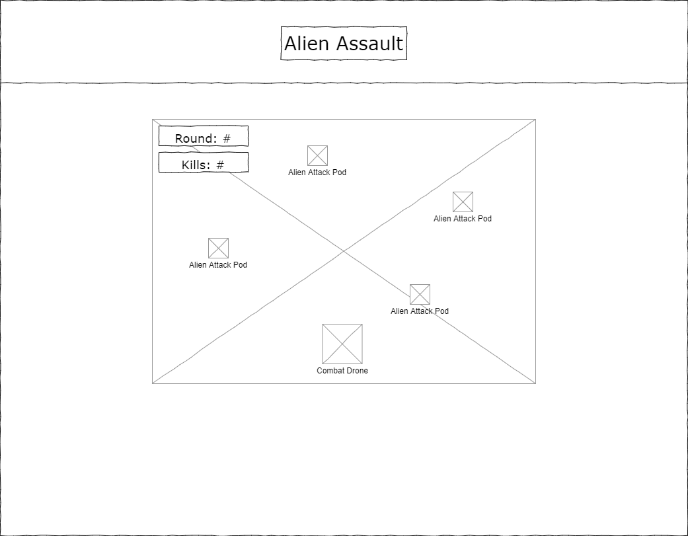

Alien Assault is a desktop web shooter in which the player must survive as many waves as possible against an unending horde of alien ships.
Alien Assault takes place in the high orbit of the Earth, which desperately trying to evacuate as it is set upon by an unknown hostile force of extra-terrestrials. Earth is wholefully unprepared for such an attack, and in the ensuing panick, all but one of the defense drones available have been destroyed, and now you must fight the armada in hopes of delaying their advance. Since there doesn't seem to be an end to this unkown foe's forces, your goal is to hold out as long as possible with your combat drone to buy Earth more time to finish the evacuation and potentially prepare a proper defense.
The game's graphics will be cartoonish, mostly consisting of pixel art and fonts. The sound design will match this, with 8-bit or futuristic sounds that will mostly consist of effects and UI interaction.
The gameplay will consist of fairy simple mechanics, where the player will be able to move using the WASD keys and shoot using the spacebar, and will be able to destroy enemies either by shooting them or ramming them. There will be powerups that spawn on some stages that will heal the player, increase the amount of bullets they fire, or increase their fire rate. Players will be told how to play the gameas as well as the function of power-ups they will find while playing through a "Controls + Tips" button on the main menu. The player's final score will be calculated based on which wave they reached and how many kills they had.
This game will be built off of the homework excercise "Circle Blast", and will feature new graphics, fonts, and controls.
Mockups:
Main Menu Screen
Combat Screen

Game Over Screen
Controls Screen
Documentation
For this project, I have decided to create an imporved version of Cirlce Blast that would implement new controls, graphics, and sounds, as well as new gameplay elements.
I innitially focused on the implementation of the new controls, which was made rather straighforward by watching the provided PIXI tutorial videos. Upon changing the fire controls to utilize the spacebar, I then realized I would also need some sort of cooldown to limit the fire rate, which I was able to implement rather easily. The new gameplay mechanics I added were in the form of power-ups, of which there are three types. Health-Ups increase the player's health by 40 points, Bullet-Ups increase the number of bullets the player fires by one, and reload up decrease the firing cooldown by 0.04 seconds. To better explain these new controls and the power-ups to the player, I added labels to the new ControlScene, which can be accessed through the "Controls + Tips" button at the bottome of the main menu.
After implementing the majority of the games functionality (controls and power-ups), I decided to then implment new sprites for the player's ship and the aliens, and to do this I used the a website called
"Piskelapp". After creating the new sprites, I also found clipart of the Earth to use as a backdrop for my game from the website "Clipart Library". To find new sounds I used the website "Zapsplat", and after downloading the mp3's, I used the site "MP3Cut" to trim the clips and adjust the volume.
One of the last things I did was implment a new font, and the one I found was on "Orbitron", available for free on "Google Fonts". After this, I made minor adjustments to the gameplay, having the aliens spawn above the screen and descend on the player, and if the got past the player, the player would lose health and a new sound effect plays. Finally, I implmented CSS in an external style sheet, centering the game, adding a header and footer, and changing background colors and the font's color and size.